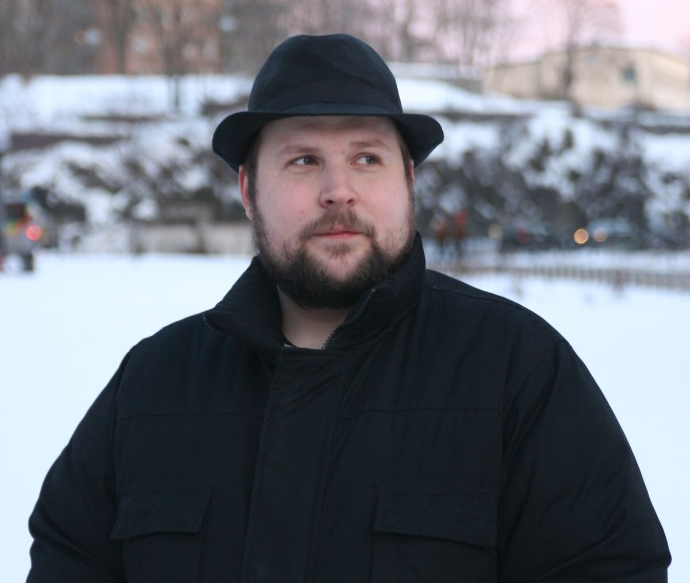

Origin of Minecraft
Minecraft เป็นเกมแซนด์บ็อกซ์ปี 2011 ที่พัฒนาและจัดจำหน่ายโดย Mojang Studios ซึ่งเป็นผู้พัฒนาเกมสัญชาติสวีเดน เดิมทีเกมนี้ถูกสร้างขึ้นโดย Markus "Notch" Persson โดยใช้ภาษาโปรแกรมมิ่ง Java โดยเวอร์ชันอัลฟ่าแบบสาธารณะตัวแรกถูกปล่อยออกมาเมื่อวันที่ 17 พฤษภาคม 2009 หลังจากนั้น เกมก็ได้รับการพัฒนาอย่างต่อเนื่องจนกระทั่งเปิดตัวเวอร์ชันเต็มในวันที่ 18 พฤศจิกายน 2011 หลังจากการเปิดตัว Persson ได้ออกจาก Mojang และมอบหมายให้ Jens "Jeb" Bergensten ดูแลการพัฒนาต่อไป
นับตั้งแต่การเปิดตัว เกมได้ถูกพอร์ตไปยังแพลตฟอร์มต่าง ๆ มากมาย รวมถึงสมาร์ตโฟน แท็บเล็ต และคอนโซลวิดีโอเกมหลายรุ่น ในปี 2014 บริษัท Mojang และทรัพย์สินทางปัญญาของ Minecraft ถูกซื้อโดย Microsoft ด้วยมูลค่า 2.5 พันล้านดอลลาร์สหรัฐ Minecraft เป็นวิดีโอเกมที่มียอดขายสูงสุดตลอดกาล โดยมียอดขายมากกว่า 300 ล้านชุด และมีผู้เล่นที่ยังคงเล่นอยู่เกือบ 170 ล้านคนต่อเดือน ณ ปี 2024